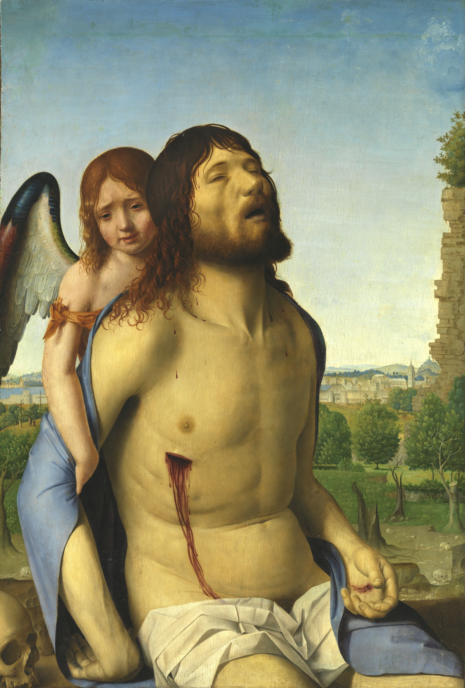

The Pietà — giving sorrow a face

What does “Pietà” mean?
The word evokes compassion before the dead Christ. In many images Mary carries her son; here, an angel supports the body.
An image for meditation
Antonello does not recount the whole Passion. He brings a lifeless body close to a grieving face. The gestures holding Christ make his weight tangible; the angel gives sorrow an expression we can recognise.
This closeness allows an intimate reading: before the image, the viewer becomes the silent witness to a loss.
The angel carrying Christ belongs to the painting’s devotional invention: the Gospels do not describe this precise moment.
For the context of Christ’s death and burial: John 19:30–42.